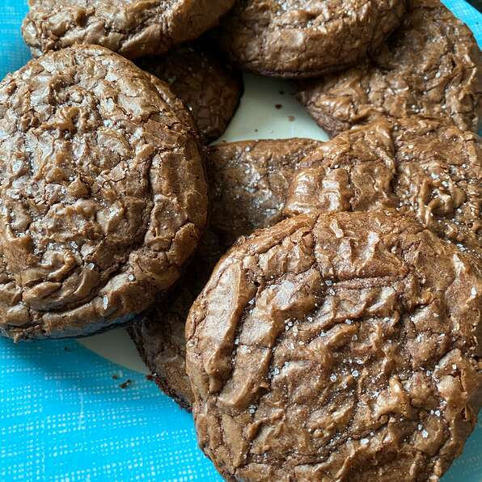

Salted Chocolate Cookies

Description
The addition of sea salt takes these big, soft, chocolaty, fudgy cookies to another level. Chocolate lovers will find these cookies irresistible.
Ingredients:
- non-stick cooking spray
- 1 cup all-purpose flour
- 1/4 cup unsweetened cocoa powder
- 1 teaspoon baking powder
- 1/2 teaspoon salt
- 1/2 cup butter, cut into chunks
- 3/4 cup semisweet chocolate chips
- 2/3 cup brown sugar
- 1/2 cup white sugar
- 2 eggs
- 1 teaspoon vanilla extract
- 1 tablespoon sea salt, or as needed
Steps:
- Preheat the oven to 350 degrees F (175 degrees C). Line 2 large baking sheets with parchment paper and spray with cooking spray.
- Combine flour, cocoa powder, baking powder and 1/2 teaspoon sea salt in a bowl.
- Place butter in a saucepan over low heat and cook until melted, 3 to 5 minutes. Add chocolate chips and stir until completely melted. Remove from the heat.
- Combine brown sugar, white sugar, eggs, and vanilla extract in a bowl and beat with an electric mixer until creamy. Pour a small amount of the chocolate mixture
into the egg mixture and stir until well combined. Slowly add remaining chocolate mixture, stirring constantly so the eggs don't curdle. Fold in the flour mixture
until just combined. Do not overmix.
- Drop 6 large scoops of batter about 2 inches apart onto each of the prepared baking sheets.
- Bake in the preheated oven until cookies have spread and flattened to a diameter of 4 1/2 inches or larger, and the tops are crinkled and puffed, 12 to 14 minutes.
Immediately sprinkle with sea salt.
- Place baking sheets on a wire rack and cool for 18 to 20 minutes. Remove cookies with a spatula onto serving platter.
home | next recipe